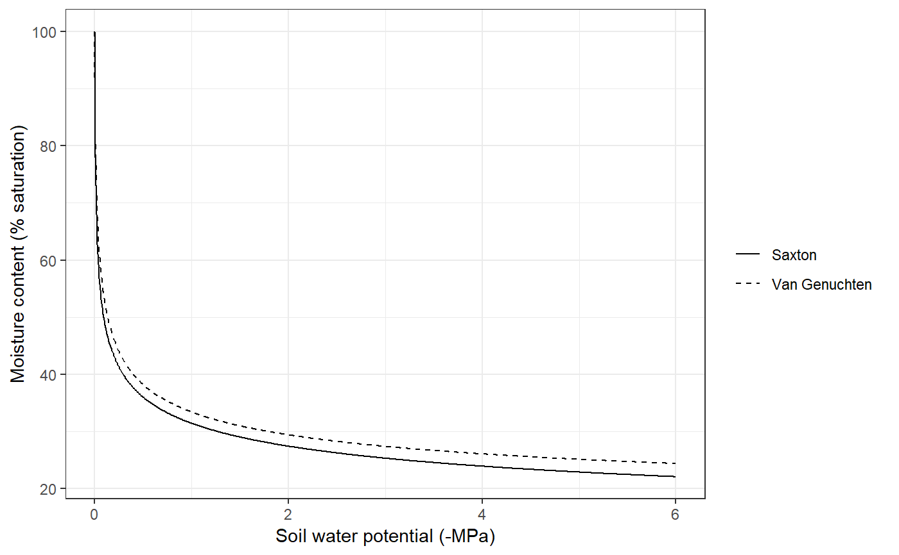

soil_texture.RdFunctions soil_psi2thetaSX and soil_theta2psiSX calculate water potentials (psi) and water contents (theta) using texture data the formulae of Saxton et al. (1986) or Saxton & Rawls (2006) depending on whether organic matter is available. Functions codesoil_psi2thetaVG and soil_theta2psiVG to the same calculations as before, but using the Van Genuchten - Mualem equations (Wösten & van Genuchten 1988). Function soil_USDAType returns the USDA type for a given texture. Function soil_vanGenuchtenParamsCarsel gives parameters for van Genuchten-Mualem equations for a given texture type (Leij et al. 1996), whereas function soil_vanGenuchtenParamsToth gives parameters for van Genuchten-Mualem equations for a given texture, organic matter and bulk density (Toth et al. 2015). Correspondingly, functions soil_waterFC and soil_thetaFC calculate the water volume (in mm or as percent of soil volume) of each soil layer at field capacity, according to a given water retention model. Functions soil_waterWP and soil_thetaWP calculate the water volume (in mm or as percent of soil volume) of each soil layer at wilting point (-1.5 MPa), and functions soil_waterSAT, soil_thetaSATSX and soil_thetaSAT calculate the saturated water volume (in mm or as percent of soil volume) of each soil layer. Functions soil_psi, soil_water and soil_theta return the current water potential and water content (in mm or as % volume) of the soil object, according to a given water retention model.
soil_psi2thetaSX(clay, sand, psi, om = NA) soil_psi2thetaVG(n, alpha, theta_res, theta_sat, psi) soil_theta2psiSX(clay, sand, theta, om = NA) soil_theta2psiVG(n, alpha, theta_res, theta_sat, theta) soil_USDAType(clay, sand) soil_vanGenuchtenParamsCarsel(soilType) soil_vanGenuchtenParamsToth(clay, sand, om, bd, topsoil) soil_psi(soil, model="SX") soil_theta(soil, model="SX") soil_water(soil, model="SX") soil_waterFC(soil, model="SX") soil_waterWP(soil, model="SX") soil_waterSAT(soil, model="SX") soil_waterExtractable(soil, model="SX", minPsi = -5.0) soil_thetaFC(soil, model="SX") soil_thetaWP(soil, model="SX") soil_thetaSAT(soil, model="SX") soil_thetaSATSX(clay, sand, om = NA) soil_waterTableDepth(soil, model="SX") soil_retentionCurvePlot(soil, model="SX", layer = 1, psi = seq(0, -6.0, by=-0.01), relative = TRUE, to = "SAT")
| clay | Percentage of clay (in percent weight). |
|---|---|
| sand | Percentage of sand (in percent weight). |
| n, alpha, theta_res, theta_sat | Parameters of the Van Genuchten-Mualem model (m = 1 - 1/n). |
| psi | Water potential (in MPa). |
| theta | Relative water content (in percent volume). |
| om | Percentage of organic matter (optional, in percent weight). |
| bd | Bulk density (in g/cm3). |
| topsoil | A boolean flag to indicate topsoil layer. |
| soilType | A string indicating the soil type. |
| soil | Soil object (returned by function |
| model | Either 'SX' or 'VG' for Saxton's or Van Genuchten's water retention models; or 'both' to plot both retention models. |
| layer | Soil layer to be plotted. |
| relative | Boolean flag to indicate that retention curve should be relative to field capacity or saturation. |
| to | Either 'SAT' (saturation) or 'FC' (field capacity). |
| minPsi | Minimum water potential (in MPa) to calculate the amount of extractable water. |
Functions soil_psi2thetaSX and soil_psi2thetaVG return the soil water potential (in MPa) from soil volumetric water content, and functions soil_theta2psiSX and soil_theta2psiVG do the reverse calculation returning water potential in MPa. Function soil_USDAType returns a string. Function soil_vanGenuchtenParamsToth and soil_vanGenuchtenParamsCarsel return a vector with four parameter values (alpha, n, theta_res and theta_sat, where alpha is in MPa-1). Function soil_waterTableDepth returns water table depth in mm from surface.
Leij, F.J., Alves, W.J., Genuchten, M.T. Van, Williams, J.R., 1996. The UNSODA Unsaturated Soil Hydraulic Database User’s Manual Version 1.0.
Saxton, K.E., Rawls, W.J., Romberger, J.S., Papendick, R.I., 1986. Estimating generalized soil-water characteristics from texture. Soil Sci. Soc. Am. J. 50, 1031–1036.
Saxton, K.E., Rawls, W.J., 2006. Soil water characteristic estimates by texture and organic matter for hydrologic solutions. Soil Sci. Soc. Am. J. 70, 1569. doi:10.2136/sssaj2005.0117
Wösten, J.H.M., & van Genuchten, M.T. 1988. Using texture and other soil properties to predict the unsaturated soil hydraulic functions. Soil Science Society of America Journal 52: 1762–1770.
Tóth, B., Weynants, M., Nemes, A., Makó, A., Bilas, G., & Tóth, G. 2015. New generation of hydraulic pedotransfer functions for Europe. European Journal of Soil Science 66: 226–238.
#Determine USDA soil texture type type = soil_USDAType(clay=40, sand=10) type#> [1] "Silty clay"#Van Genuchten's params (bulk density = 1.3 g/cm) vg = soil_vanGenuchtenParamsToth(40,10,1,1.3,TRUE) vg#> alpha n theta_res theta_sat #> 92.643194 1.249553 0.041000 0.484241# Initialize soil object with default params s = soil(defaultSoilParams()) # Plot Saxton's and Van Genuchten's water retention curves soil_retentionCurvePlot(s, model="both")